NGL@0.10.2-7 gallery
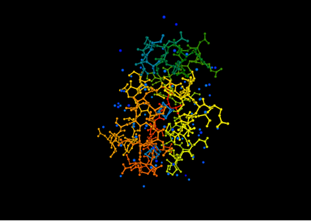
color/atomindex
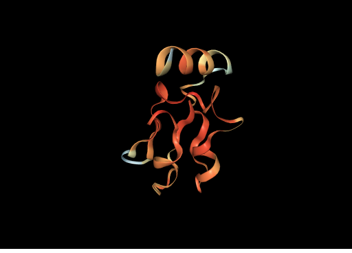
color/bfactor
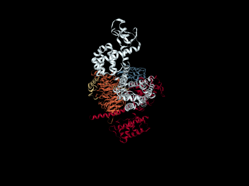
color/chainid
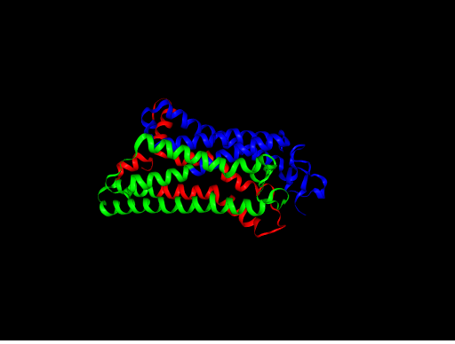
color/custom
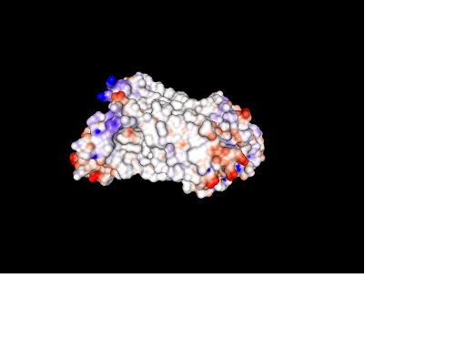
color/electrostatic
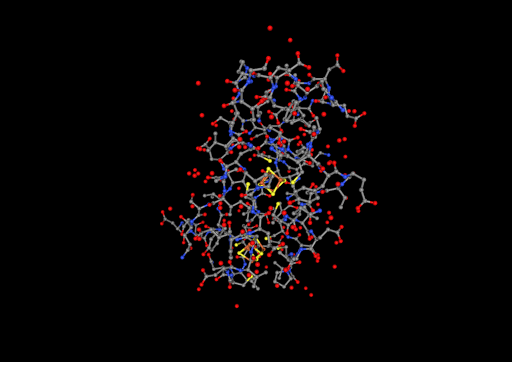
color/element
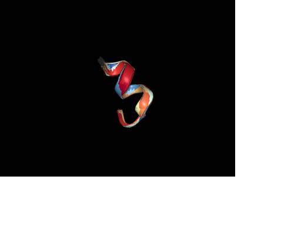
color/modelindex
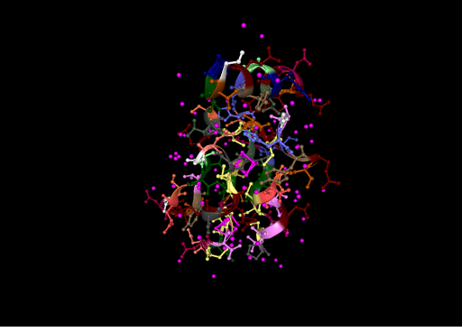
color/resname
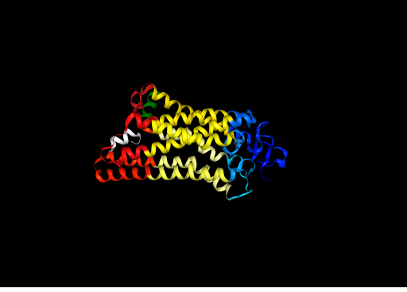
color/selection
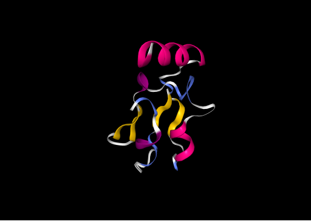
color/sstruc
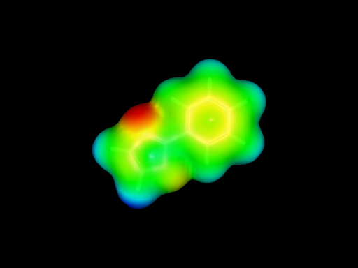
color/volume-esp
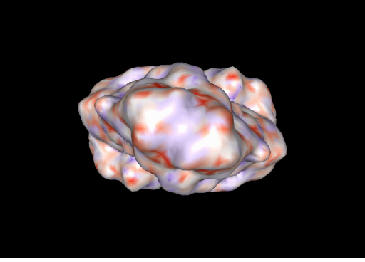
color/volume
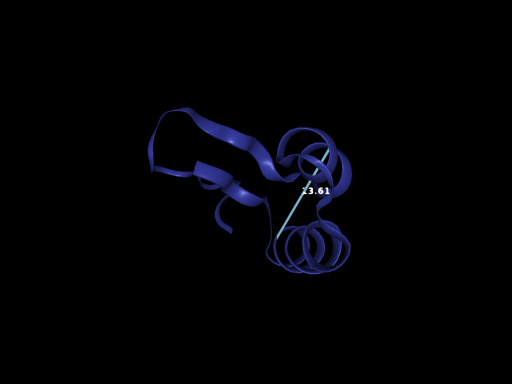
component/getByName
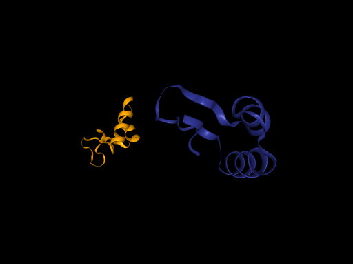
component/matrix
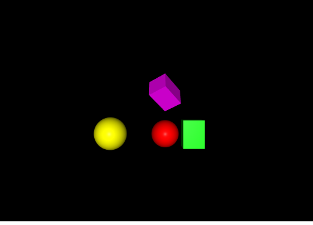
component/shape-buffer
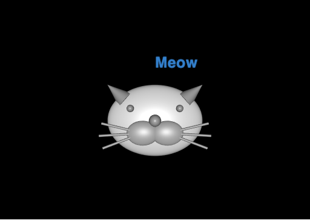
component/shape-cat
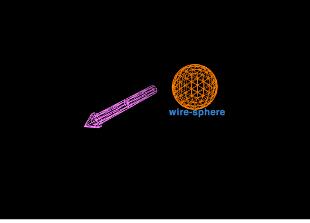
component/shape-wireframe
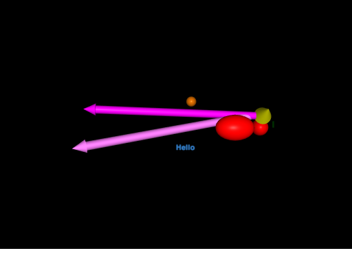
component/shape
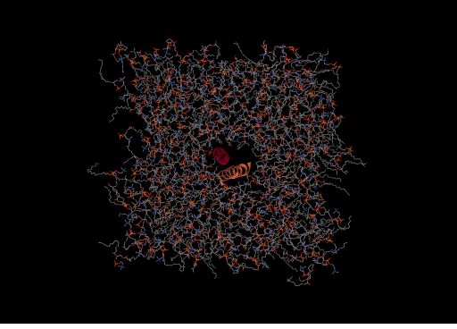
component/structure-autoChainName
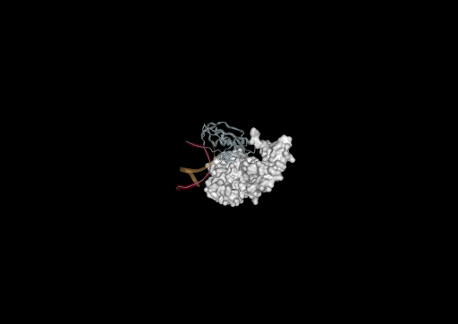
component/structure-biomol
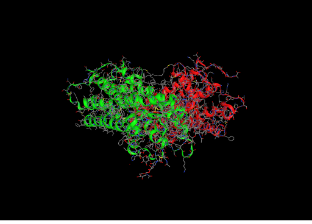
component/structure-biomolSimple
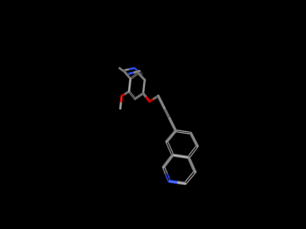
component/structure-bondOrders
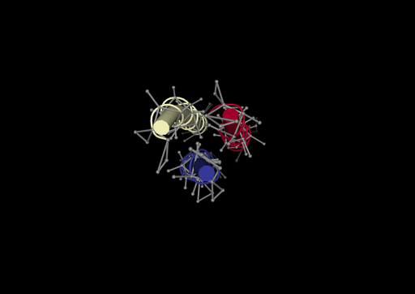
component/structure-coarseGrained
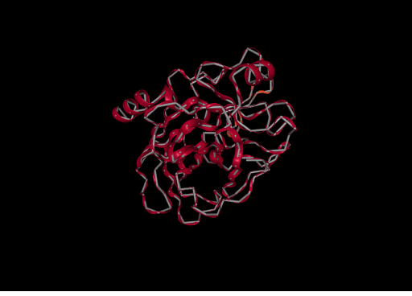
component/structure-cyclic
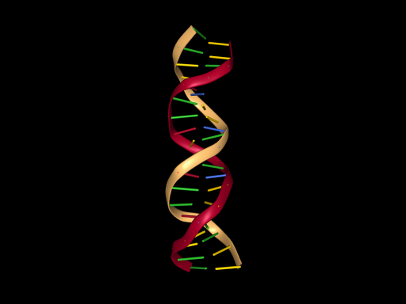
component/structure-dna
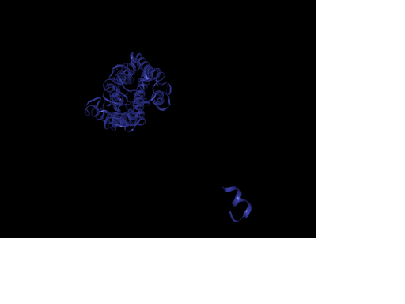
component/structure-multiModel
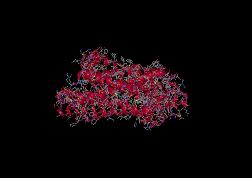
component/structure-superpose
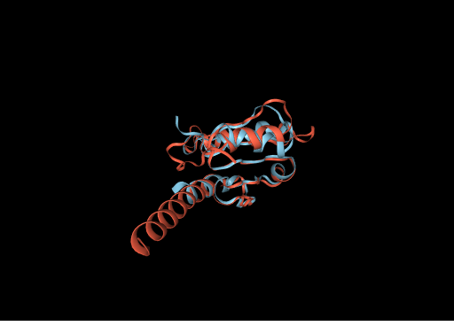
component/transform
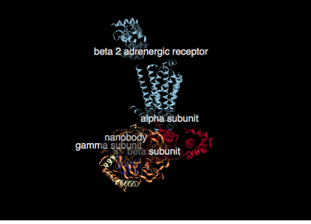
interactive/annotation
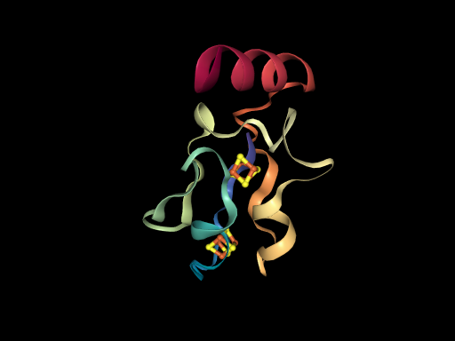
interactive/hover-tooltip
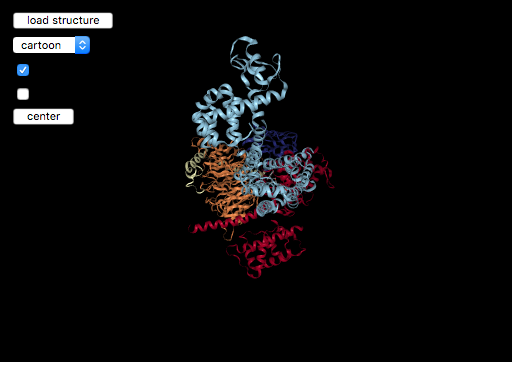
interactive/simple-viewer
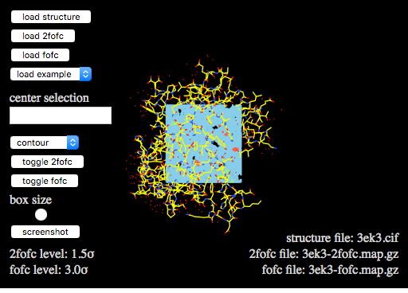
interactive/xray-viewer
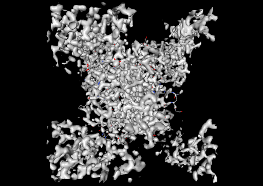
parser/brix
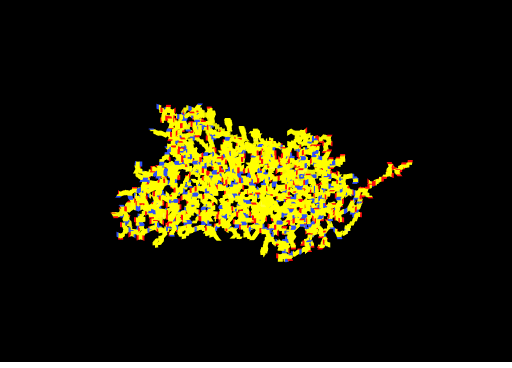
parser/ccp4
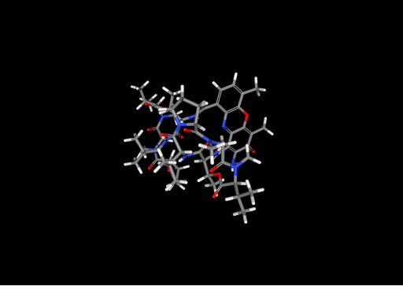
parser/cif-chemComp
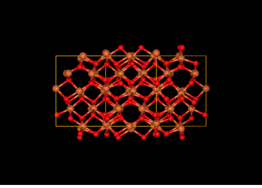
parser/cif-core
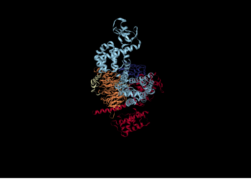
parser/cif
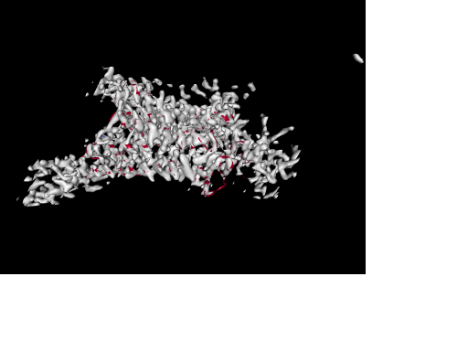
parser/cns
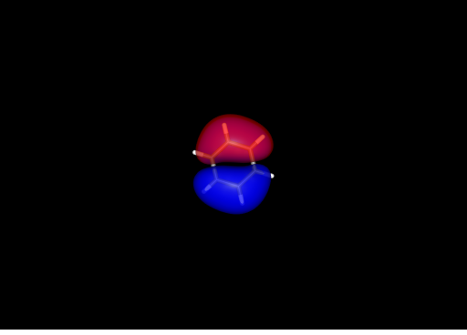
parser/cube-benzene
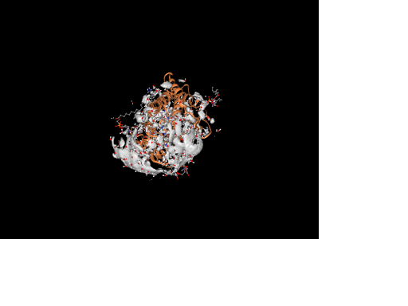
parser/cube-big
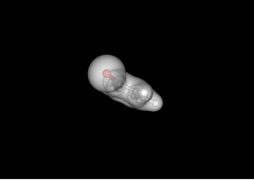
parser/cube-bromobenzene
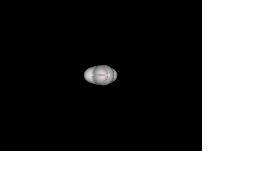
parser/cube
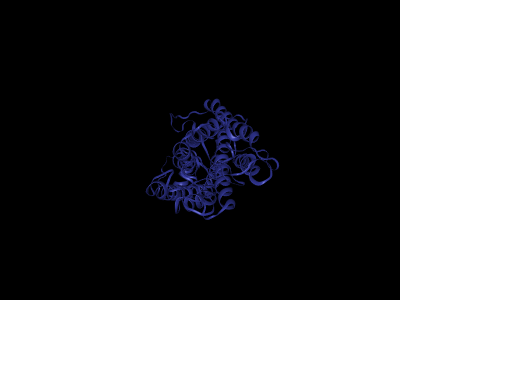
parser/dcd-large
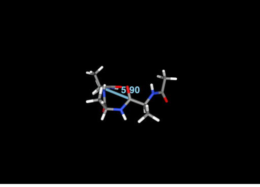
parser/dcd
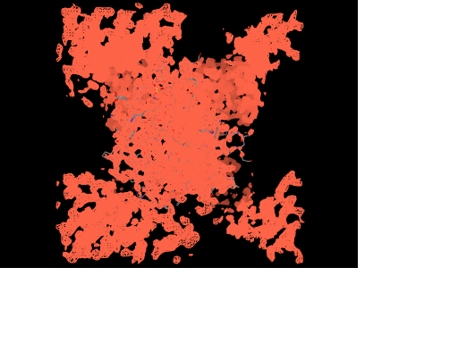
parser/dsn6
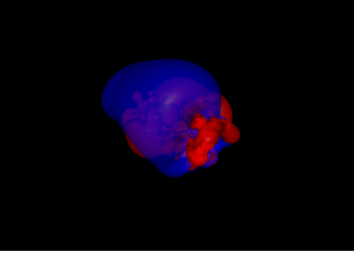
parser/dx
 parser/dxbin
parser/dxbin
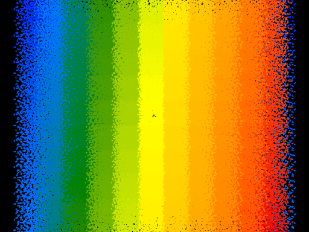
parser/gro-large
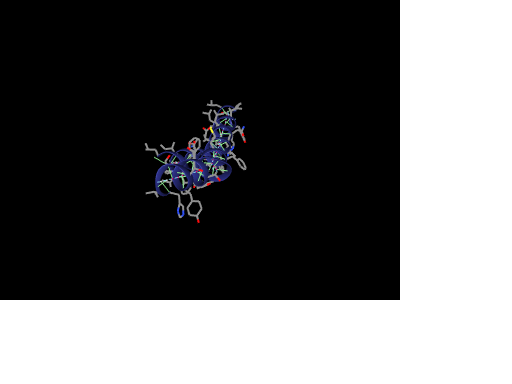
parser/gro-trajectory
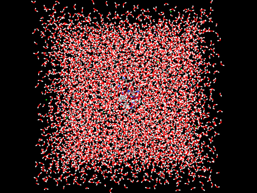
parser/gro
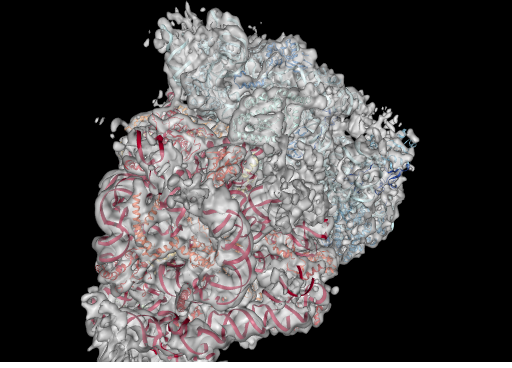
parser/map
parser/mmtf-reduced
parser/mmtf
parser/mol2
parser/mrc
 parser/obj
parser/obj
parser/pdb
parser/ply
parser/pqr
parser/psf
 parser/sdf
parser/sdf
parser/validation
representation/axes
representation/contact
representation/distance
representation/helixorient
representation/hyperball
 representation/label
representation/label
representation/molecularsurface-av
representation/molecularsurface-filter
representation/molecularsurface
representation/point
representation/representation-lazy
representation/rocket
representation/slice
representation/tube-bfactor
representation/unitcell
selection/basic
selection/bonded
selection/component
selection/large
selection/ring
selection/spatialHash
selection/sstruc
showcase/chlorellaVirus
showcase/electrostatic-apbs
showcase/ferredoxin
showcase/ferritin
showcase/gfp
showcase/hiv
showcase/norovirus
showcase/qmean
showcase/rhodopsin
 showcase/ribosome
showcase/ribosome
showcase/viruses
test/1blu
test/alignment
test/alignment2
test/backboneTypeChange
test/helixorient_issue-7
test/impostor
test/map-shift
test/molsurf-object
test/orient
test/pbc
test/timing
test/xray